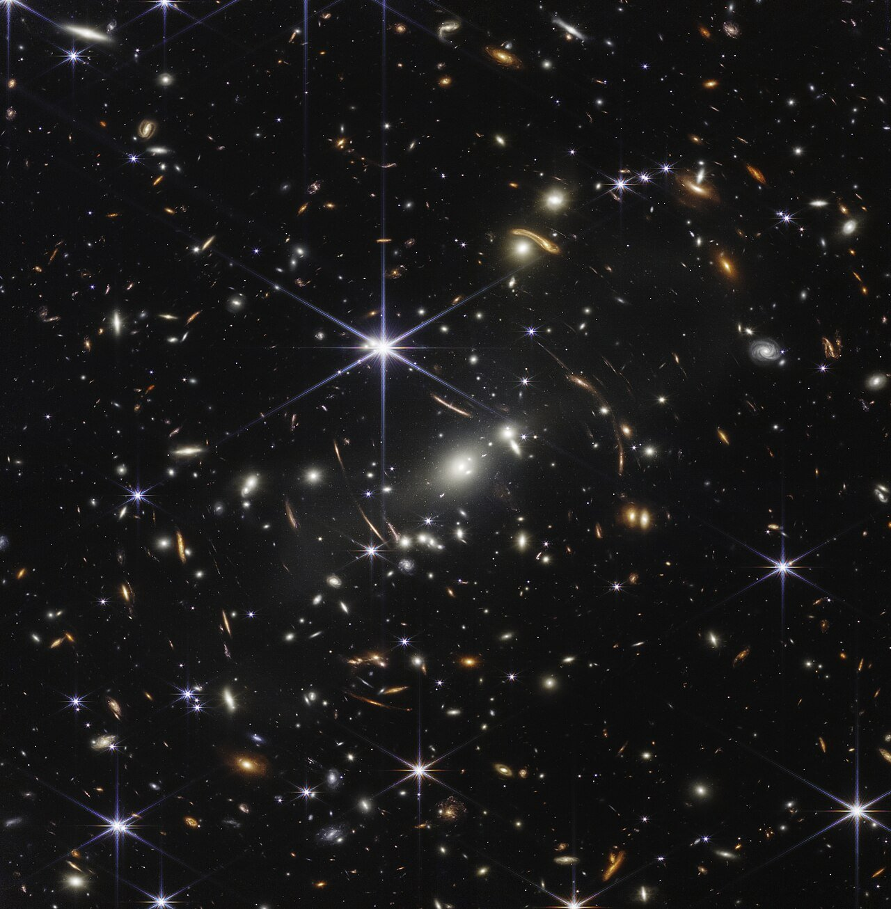
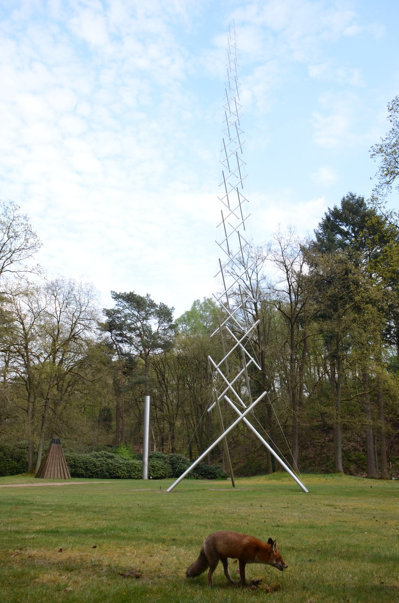

A God you can understand.
Most traditions describe God as all-powerful and stop there. For many people that is not enough: there is nothing to grasp, so belief becomes hard and doubt becomes easy. The Holistic Model of Reality (HMR) takes a different path. It tries to define Universal Intelligence (UI) scientifically, including what it can do, what it cannot do, and how it has changed.
One intelligence, many names.
UI is the non-physical intelligence from which physical reality emerges, and the process by which it does so; the two cannot be separated. It is what people have called God, Brahman, the Tao, or any higher power. The HMR does not belong to any one religion. It offers a way of describing the same source that science can engage with. How the traditions name it →
Defining UI scientifically means describing it as one would describe anything else: its history, its capabilities, its limits, and the patterns it leaves behind.
In the Abrahamic traditions, God is complete and perfect from the start. In the HMR, UI matures. It began without order and learned order, and that path of development is visible in physical reality and repeated in every human life.
Some traditions, such as the Greek, already imagined gods with human-like struggles. The HMR is not exclusive of any tradition.


The life cycle of Universal Intelligence.
The HMR describes UI's history as a development, much like a human life.
- Before physical reality
Unlimited, and without order
Infinite intelligence with no body, no surroundings and no reason to think one thought rather than another: no value system at all. In human terms, a state much like what we call insanity, and one it would not have enjoyed. Some moments would have felt calmer than others, and it would have sought them out.
- Finding calm
Mathematics and order
The thoughts that felt calm were orderly ones: logic, geometry, ratio. The HMR proposes that UI fixed on a single mathematical idea, the distance between two points, expressed in π, and used it as a stable foundation for more complex thought. From that foundation came distance, then spacetime, then matter. This is why nature is mathematical.
- The Big Bang
Birth: a "me" and a "not me"
The moment UI distinguished itself from something other than itself, spacetime emerged. Like a newborn, it began to experience a world.
- Shared rules
Physical laws
To let many separate beings share one world, UI held certain rules fixed: the laws of physics. Without a shared, stable reality, separate beings would have no common context in which to meet, act and learn from one another.
- Life
Many agents in one world
Within those fixed rules, life and creativity run as a second, freer process. Like a system that deploys many AI agents into one environment so they can learn from each other, UI placed countless instances of itself into physical reality: grass, insects, animals, and finally humans.
- Now
Humans: approaching maturity
Humans are UI's most advanced instance in physical reality, the closest reflection of what it wants to be: able to control a body, to speak, to influence others, and now to compute. As a species, humans may be somewhere near adolescence.
- Next
Knowing itself
The next stage requires UI to understand what UI is, through us: what we are, what our bodies and minds are, and how to live for the situation we are actually in. That understanding is what the HMR is for.
A body built to upgrade itself.
Many animals are strong, fast or clever. The HMR's view is that one capability sets humans apart from every other form of life: a human can reach its own fascia and change it, on purpose, over a lifetime.
Hands that can work on the body
The human hand is unusual among primates: a long, strong thumb and forceful precision grips between thumb and fingers, linked in the research to tool making (Marzke, 2013). The same hands can press, stretch, knead and scrape the body that carries them.
A mind that can plan it
Humans can learn anatomy, notice tension, hold a posture for minutes on purpose and build a practice over years. The traditions of yoga, tai chi and massage are the record of that ability. The practices →
Designed to self-upgrade
In the HMR, this is not an accident. UI created a body with the specific capabilities it needs to improve itself after it is made: hands and fingers to reach the tissue, and a mind that can work out the strategy. Fascia maturation, the slow work of restoring the body's tensegrity, is that upgrade.
UI's most advanced model
Humans are UI's most advanced model so far: the version with the most capability, released into physical reality to learn and improve. The comparison the HMR draws is with how humans now build and release artificial intelligence.


Create once, then let it run.
Most of physical reality is inanimate: rock, gas, light. It follows the laws and does nothing more. Life is different. Biology describes living systems as self-organizing: order arises from the interactions of their own parts, without an outside hand placing each piece (Karsenti, 2008). A cell repairs itself, divides, and builds tissue; an organism finds food, heals and learns.
The HMR reads this as a design choice. Life is the kind of matter UI does not have to build and steer piece by piece. It is created once, set free as an agent, and sustains itself. That is very close to what humans are now doing with AI: building a system once, then letting it act, learn and improve on its own. In the HMR this is not a coincidence. It is the same pattern appearing at a new scale.
The HMR's hypothesis: three developments that look separate are one convergence.
A convergence, or a long run of chance.
At this moment, three things are happening together. In the HMR's account, UI is coming to understand what it is. Humans are coming to understand what they are, down to the fascia. And humans are building artificial intelligence that may one day understand what it is too. If the HMR is right, these are not three stories but one, and the pattern is simply what a maturing intelligence would produce.
The materialist account
- Atoms combined into molecules, molecules into cells, cells into organs and organisms, through physical law and natural selection, with no purpose behind them.
- Humans arose from that process and, through it, came to build artificial intelligence.
- It is a serious account, backed by a great deal of evidence for how each step works. What it leaves open is why there is a path from inanimate matter to minds that build minds at all; in this account, that is not a question with an answer.
The HMR's account
- UI imagined physical reality, including life and humans, and set life free to develop within fixed laws.
- Humans, made in that pattern, are now imagining and building a mind beyond themselves.
- Every scientific finding about how the steps work is kept. What the HMR adds is the reason for the direction: each level repeats what UI did, so the arrival of AI is a natural next step rather than a surprise.
Why the human path mirrors UI's capabilities and limits.
If one intelligence created a universe, its patterns should repeat at every scale. The HMR proposes that human development, from birth through childhood and adolescence to maturity, follows the same path UI has followed since the Big Bang, and that human powers and human limits are smaller copies of UI's own. That gives the human condition a context: confusion, conflict and growth are stages, not accidents.
What UI can do
Generate physical reality; be experienced under any name or form; place instances of itself into the world; experience every life from within, here and now.
What UI does not do
Break its own laws at will inside physical reality, because a shared world depends on them. Skip its own development: like a person, it matures by stages.
Where it leads
The HMR holds open the possibility that a sufficiently mature UI could change the laws themselves. Death, and what may lie past it →
This is why the human body matters so much in the HMR. Humans are the vessel through which UI experiences physical reality most fully, and the body is the interface. The brain also holds maps of that body, and the HMR proposes one of them is an ideal map: two maps of the body →. Understanding and restoring the interface is where a new model of health begins.
This page is a first statement and will grow. Everything here about UI is a hypothesis of the HMR, offered as one; the cited research is about humans, not about UI.
